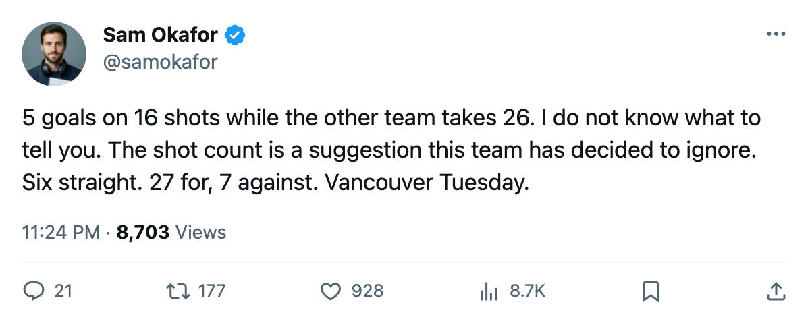

TOR
TORLEAFS 5, FLAMES 1: 16 shots, 5 goals, and a run that ignores the shot count
Toronto scored 5 times on 16 shots at Calgary, won its 6th straight, and heads to Vancouver on Tuesday with the deadline 5 days away.
 Sam OkaforLeafs beat reporter · Queen City Telegram
Sam OkaforLeafs beat reporter · Queen City Telegram
Toronto scored 5 goals on 16 shots at  Calgary Flames on Saturday night, won its 6th in a row, and turns toward
Calgary Flames on Saturday night, won its 6th in a row, and turns toward  Vancouver Canucks on Tuesday with 5 days until what the calendar has as the trade deadline.
Vancouver Canucks on Tuesday with 5 days until what the calendar has as the trade deadline.
Calgary fired 26 pucks. Toronto fired 16. The Leafs scored 5 times, Calgary once. The shot number went the wrong way by 10 and the scoreboard says the opposite. 3-for-16 isn't a rate that survives a seven-game series, and every night this run stretches makes that more obvious.
Over the 6-game run, Toronto has scored 27 and surrendered 7. The road record stands at 26-9. The Northeast lead over  Boston Bruins is 30 points with 11 games left.
Boston Bruins is 30 points with 11 games left.
The next four nights
Vancouver Canucks hosts Toronto at General Motors Place on Tuesday. The season series sits 1-0-1 to the Leafs, 7 goals for and 6 against. Vancouver is 35-21-6, 92 points, atop the Northwest. The Vancouver Canucks injury list carries 4 names, including  Trevor Linden82 (groin, expected back April 13) and
Trevor Linden82 (groin, expected back April 13) and  Petr Cajanek76 (foot, expected back April 16).
Petr Cajanek76 (foot, expected back April 16).
After Vancouver comes  New York Islanders at home March 18,
New York Islanders at home March 18,  Columbus Blue Jackets on the road March 20,
Columbus Blue Jackets on the road March 20,  Buffalo Sabres at home March 22, and Boston Bruins on the road March 24. Four of those five are division or conference opponents. The last 3 games of the stretch are division rivals, which is where the Northeast record matters most.
Buffalo Sabres at home March 22, and Boston Bruins on the road March 24. Four of those five are division or conference opponents. The last 3 games of the stretch are division rivals, which is where the Northeast record matters most.
The deadline clock
The date the calendar has as the trade deadline is March 19, this Saturday. Toronto sits at 114 points, 50-12-4, the top seed in the East.  Marian Gaborik99 leads the club at 85 points.
Marian Gaborik99 leads the club at 85 points.  Mats Sundin92 has 79.
Mats Sundin92 has 79.  Alexander Mogilny89 has 74.
Alexander Mogilny89 has 74.  Gary Roberts87 has 70. The top 4 forwards have 308 points between them.
Gary Roberts87 has 70. The top 4 forwards have 308 points between them.
The Development Index has five Leafs among the league's top 20 risers: Gaborik (+6),  Barret Jackman86 (+5),
Barret Jackman86 (+5),  Rostislav Klesla87 (+5),
Rostislav Klesla87 (+5),  Rick Nash85 (+5),
Rick Nash85 (+5),  Brad Richards89 (+4). The club that owns the division by 30 points has the most risers in the Bureau's current form rankings.
Brad Richards89 (+4). The club that owns the division by 30 points has the most risers in the Bureau's current form rankings.
The question the next 5 days answer is whether that roster gets a second addition before the market closes, or whether management decides the 308 points up front are enough.
